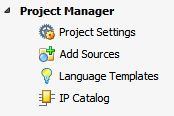

Project Manager 環境では、インメモリ デザインを開かずに現在のプロジェクトを実行できます。この環境には、Flow Navigator の [Project Manager] をクリックするといつでもアクセスできます。
|
この環境では、次を実行できます。
|
 |
関連項目
| 『Vivado Design Suite ユーザー ガイド : Vivado IDE の使用』 (UG893) | |
 |
Vivado Design Suite QuickTake ビデオ : Vivado IDE 入門 |